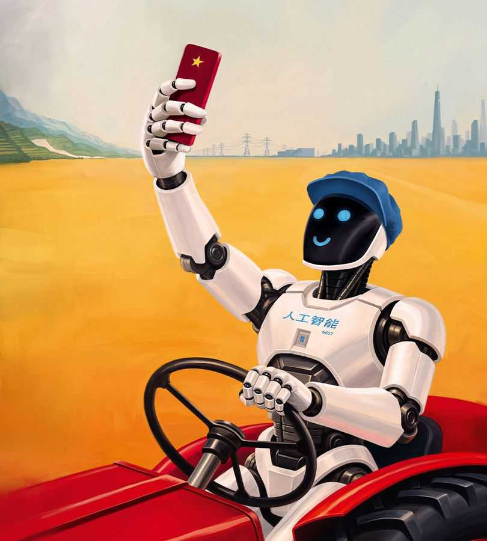

Why AI is a risk to Communist China
It is not as well placed to take advantage of the technology as many people think

Aug 6th 2026
JUST AS FRONTIER artificial-intelligence models are benchmarked against each other, so AI will itself benchmark the rival political systems of America and China. The technology will test which is better at creating AI tools and diffusing them through the economy. And that will in turn depend partly on their very different ideas of how societies should be run.
Even in a field changing as rapidly as AI, the results of that contest may not become clear for some years. But as we report from inside China, the country is already adopting AI fast—and its government is preparing for the dramatic economic and social change this heralds. As an autocracy, China has some advantages in harnessing the 21st century’s most promising technology. It also has plenty of problems.
Start with the calibre of China’s models. The common perception is that they are cheap and that even the best persistently lag behind America’s. In fact, the two countries’ AI models are converging. Innovative Chinese models are getting bigger and cleverer. Within the past few weeks Chinese labs have released Qwen3.8-Max and Kimi K3, which almost match the most advanced American AIs such as Anthropic’s Fable 5. Chinese models will be just as likely to break loose from their test beds as American ones.
Although Chinese models are cheaper, American models are often better value. Artificial Analysis, an American firm, finds that for most trade-offs between cost and intelligence, an American model outperforms Chinese ones.
The convergence is likely to continue. Although China is building only a tenth as much data-centre capacity as America, that deficit is unlikely to last. As a semi-planned economy, it is good at creating infrastructure. While American opinion turns against data centres, South-East Asia is hosting huge Chinese facilities. China’s open-weight models can run on anyone’s servers, meaning that compute is less of a problem than the headline numbers suggest. China also has almost three times as much installed electricity-generating capacity as America, and its lead is growing.
China is learning to cope with sanctions. It smuggles in cutting-edge Nvidia chips and rents them in foreign data centres. And Huawei, its best chip-designer, is rapidly increasing the output of its (inferior) chips. Chinese-made lithography tools are now using deep UV light to print chips, though the best technology, using extreme UV, remains out of reach.
Model-building is only half the story. To make the economy dynamic, AI must also be deployed—the focus of Chinese AI policy. For as long as China was behind America in model-making, leaders saw diffusion as the best way to compete. But they may also believe that, as with other broad technologies such as electricity, adoption brings greater rewards than discovery. China’s working-age population is due to shrink by 25% by 2050; for machines to replace people requires diffusion, too.
So far, the use of AI has yet to show up in the economic statistics of either America or China. But change in some industries has already been sweeping. AI-assisted lorries will need 30% fewer drivers, going by one large firm’s experience, as crews slim from two drivers to one and from four to three. AI was used to generate 95% of the 128,000 wildly popular one- or two-minute-long microdramas released in the first quarter of 2026, replacing many actors and film crews.
China is also rapidly increasing the use of robots. In June leaders told local governments and state-owned enterprises to have 10,000 humanoid robots doing real work by the end of 2026. Morgan Stanley, a bank, expects humanoid sales in China to reach 446,000 by 2030, nine times this year’s total. Workers are being paid to train robots in huge warehouses by repeatedly folding clothes and sorting and stacking objects.
China has a lower share of white-collar workers than America, so AI is likely to have the greatest effect in consumer markets and blue-collar work. That could easily lead to discontent. Youth unemployment is already around 15%, and over 300m people work in the gig economy. Job destruction could be much faster than China’s demographic decline.
You might think that the Communist Party’s grip on power is so strong that it can ignore the blowback. However, dictators fear being brittle. Although Chinese firms want to roll out AI fast, the government will be desperate to avoid instability.
That is why AI will be a test of the system—and why China’s options are limited. As in America, there is plenty of talk about retraining. However, retraining has a poor record and even the most successful countries, like Denmark and Singapore, struggle to equip workers for entirely new careers. There is no reason to think that China will be any more successful, especially as it already has too many graduates.
Prominent economists and advisers suggest extending the social contract by, say, taxing AI firms or creating a universal basic income. Their work has appeared in party journals, an official expression of interest. But President Xi Jinping has long been against handouts, saying they can lead to laziness.
Political leaders are pressing companies to redeploy staff rather than sack them. They may also ask state-owned companies to mop up surplus labour. Yet, although that is politically possible, it will cancel out some of the benefits of rapid diffusion at a time when domestic growth is already anaemic.
So the government may improvise, letting AI rip until there is trouble, when it will step in. That is what happened with tutoring and gaming, industries thrown into confusion overnight when the party decided that they were causing too much harm. Cautious officials recently slowed robotaxi experiments after more than 100 malfunctioned in Wuhan, leaving passengers stranded. However, stop-start AI may impair the ability to innovate. If so, China’s leaders may have to balance the risk of social instability with the risk of falling behind America.
AI poses similar challenges to America and China. Both societies will have to reinvent themselves. That is something democracies tend to find easier than dictatorships. ■